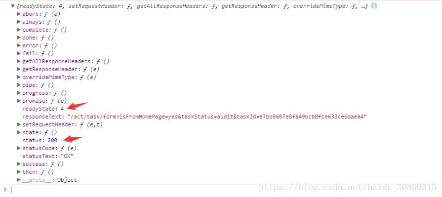
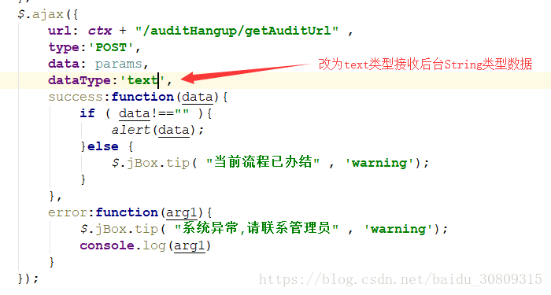

# ajax 请求
$.ajax({ | |
url: ctx + "/auditHangup/getAuditUrl" , | |
type:'POST', | |
data: params, | |
dataType:'json', | |
success:function(data){ | |
if ( data!=="" ){ | |
alert(data); | |
}else { | |
$.jBox.tip( "当前流程已办结" , 'warning'); | |
} | |
}, | |
error:function(arg1){ | |
$.jBox.tip( "系统异常,请联系管理员" , 'warning'); | |
console.log(arg1) | |
} | |
}); |
# 后台接口
/** | |
* 跳转到审核页面 | |
* @param projectId 项目 id | |
* @return 页面 | |
*/ | |
@RequestMapping("getAuditUrl") | |
@ResponseBody | |
public String redirectAuditUrl( String projectId ){ | |
return auditHangupService.getAndAssembleAuditPageUrl(projectId); | |
} |
# ajax error
执行后打印 ajax 方法的 error 参数 arg1 信息，返回的状态是正常的 200

# 解决方式
因为后台返回的是 String 类型数据，所以前台 ajax 接收数据时，需将 dataType 定义为 text 形式，如下

# 再次尝试请求，请求成功
附：
- ajax 的 readyState 状态值说明
在 AJAX 实际运行当中，对于访问 XMLHttpRequest（XHR）时并不是一次完成的，而是分别经历了多种状态后取得的结果，对于这种状态在 AJAX 中共有 5 种，分别是。
0 - (未初始化) 还没有调用 send () 方法
1 - (载入) 已调用 send () 方法，正在发送请求
2 - (载入完成) send () 方法执行完成，
3 - (交互) 正在解析响应内容
4 - (完成) 响应内容解析完成，可以在客户端调用了
对于上面的状态，其中 “0” 状态是在定义后自动具有的状态值，而对于成功访问的状态（得到信息）我们大多数采用 “4” 进行判断。
- AJAX 的 status 状态码说明
1**：请求收到，继续处理
2**：操作成功收到，分析、接受
3**：完成此请求必须进一步处理
4**：请求包含一个错误语法或不能完成
5**：服务器执行一个完全有效请求失败
100—— 客户必须继续发出请求
101—— 客户要求服务器根据请求转换 HTTP 协议版本
200—— 交易成功
201—— 提示知道新文件的 URL
202—— 接受和处理、但处理未完成
203—— 返回信息不确定或不完整
204—— 请求收到，但返回信息为空
205—— 服务器完成了请求，用户代理必须复位当前已经浏览过的文件
206—— 服务器已经完成了部分用户的 GET 请求
300—— 请求的资源可在多处得到
301—— 删除请求数据
302—— 在其他地址发现了请求数据
303—— 建议客户访问其他 URL 或访问方式
304—— 客户端已经执行了 GET，但文件未变化
305—— 请求的资源必须从服务器指定的地址得到
306—— 前一版本 HTTP 中使用的代码，现行版本中不再使用
307—— 申明请求的资源临时性删除
400—— 错误请求，如语法错误
401—— 请求授权失败
402—— 保留有效 ChargeTo 头响应
403—— 请求不允许
404—— 没有发现文件、查询或 URl
405—— 用户在 Request-Line 字段定义的方法不允许
406—— 根据用户发送的 Accept 拖，请求资源不可访问
407—— 类似 401，用户必须首先在代理服务器上得到授权
408—— 客户端没有在用户指定的饿时间内完成请求
409—— 对当前资源状态，请求不能完成
410—— 服务器上不再有此资源且无进一步的参考地址
411—— 服务器拒绝用户定义的 Content-Length 属性请求
412—— 一个或多个请求头字段在当前请求中错误
413—— 请求的资源大于服务器允许的大小
414—— 请求的资源 URL 长于服务器允许的长度
415—— 请求资源不支持请求项目格式
416—— 请求中包含 Range 请求头字段，在当前请求资源范围内没有 range 指示值，请求也不包含 If-Range 请求头字段
417—— 服务器不满足请求 Expect 头字段指定的期望值，如果是代理服务器，可能是下一级服务器不能满足请求
500—— 服务器产生内部错误
501—— 服务器不支持请求的函数
502—— 服务器暂时不可用，有时是为了防止发生系统过载
503—— 服务器过载或暂停维修
504—— 关口过载，服务器使用另一个关口或服务来响应用户，等待时间设定值较长
505—— 服务器不支持或拒绝支请求头中指定的 HTTP 版本